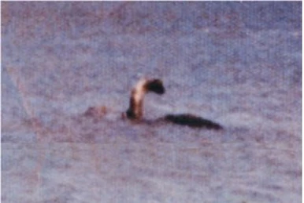
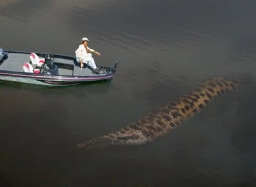
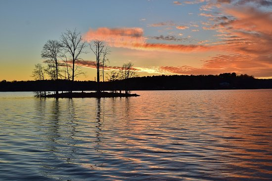

The Legend of Normie
Adding to the mystery of Lake Norman is the legend of "Normie," the lake's very own sea monster. Normie is described as a long, serpentine creature with scaly skin and fins. Much like Loch Ness's Nessie, Normie has sparked numerous sightings over the decades.
People have reported seeing large, shadowy figures moving beneath the water, giving rise to tales of the creature. While no scientific evidence supports the existence of Normie, the legend remains a popular part of local folklore and adds a sense of intrigue to Lake Norman.
The Dark Origin of Normie
Legend has it that Normie has a dark and chilling origin tied to the sunken ghost towns beneath the lake. When Duke Power flooded the Catawba River to form Lake Norman in the late 1950s, the towns of Long Island and East Monbo were submerged, their buildings, roads, and even cemeteries left behind.
As the lake waters rose, covering the abandoned mill and village, something sinister began to stir in the depths. The legend claims that Normie was born in the darkness of those flooded towns, feeding on the remains of the dead.
Normie's Present-Day Activities
As Normie's once-abundant food source dwindles, the creature is said to be searching for new prey, leading it closer to human settlements surrounding Lake Norman. The peaceful lake no longer feels as serene under the shadow of a creature said to have fed on the forgotten souls beneath.
Visitors and residents alike now keep a wary eye on the water, wondering when Normie will next surface in its desperate search for food.